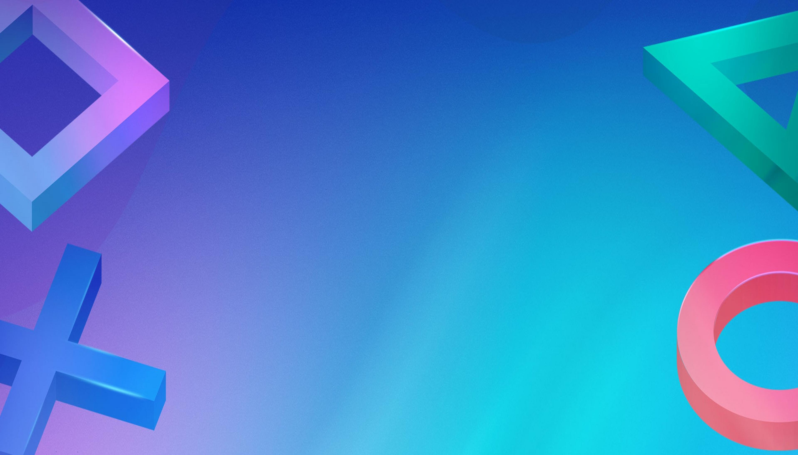
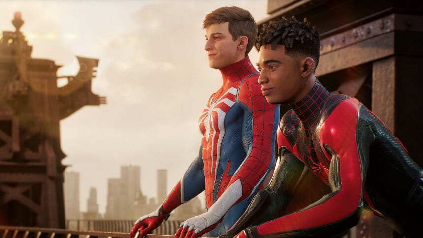

Information
PS5 info
Spider-man 2 is an amazing game in my opinion and you should definitly play it
but there is some information you might need to know or just want to know and
that is what this site is for. The first thing you need to know is that Spider
-man 2 is only available on the Playstation 5. Not available on PC, Nintendo,
Xbox and not even on ps4 and you might ask why is that the case. It is a PS
exclusive so it make sense why it is not on any other platforms, but why not
on the ps4. That is basically because the ps4 is outdatet and the ps5 is just
better. Simple as that. But what does the ps5 cost then, i hear you ask through
the screen. Well the price depends on the version of the ps5. There is two types
of ps5's. There is the normal ps5 and the ps5 digital edition. The only difference
is that ps5 digital edition does not have a disc drive. The price range for the
digital version is about 500-600 dollars and the normal is about 700-800 dollars
General info
Spider-man 2 came out on October 20. 2023. It had huge expecations since it was
a sequel to both Spider-man ps4 and Spider-man Miles Morales which had been very
good games prior. The game was recived as a very good game, but people had some
issues with it. If it was better than the original is people divided on(Personally I
it was better than the first game). Spider-man 2 was made by Insomniac Games that
also made the two first Spider-man games as well as some other known games as
Spyro, Rachet and Clank and Sunset Overdrive. On IMDb is Spider-man 2 rated 9,4
stars with their highest rated video game on their site being Witcher 3 with 9,7
Spider-man 2 is an 3D action adventure game with a story. You can also kind of
call it a platformer because of the web swinging. The rate of frames per second
is 30. Spider-man 2 costs about 60-70 dollars, for the standard game edition. I
hope that this helped you with learning a bit more about the game
